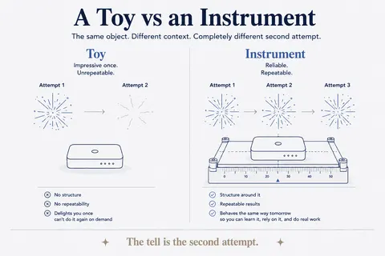
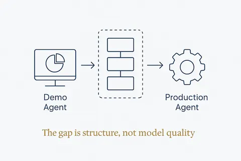
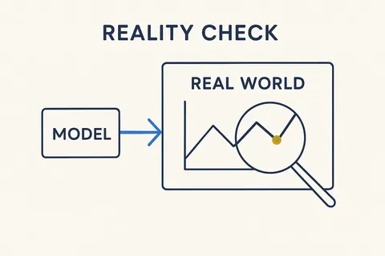
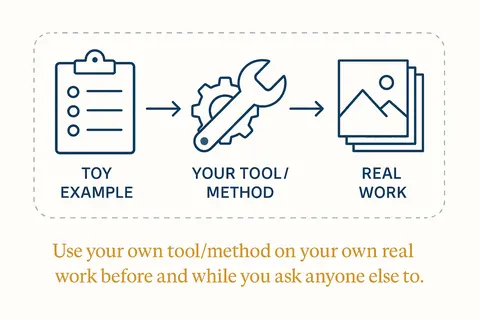

From proof of concept to something you rely on
A demo convinces; an instrument has to keep working. What changes between the first version that runs and the version a business can depend on. 5 concepts; each opens its full page in its own library.
 Proof, Not SlidesGround every claim in real numbers and real systems; never fabricate.Structure Beats Magic →
Proof, Not SlidesGround every claim in real numbers and real systems; never fabricate.Structure Beats Magic →
A Toy vs an InstrumentWithout structure AI is a toy; with structure it becomes an instrument.Structure Beats Magic →
The Demo Agent and the Production AgentThe demo is one prompt, one tool call, one context window. Production is planning, layered memory, guardrails, observability and eval loops — and the gap is not model quality.Structure Beats Magic →
Reality CheckTest the model and the plan against the real world — the actual data, deliveries and behavior — not against the assumption you started with.Breakthrough Modeling →
Eat Your Own DogfoodUse your own tool/method on your own real work before and while you ask anyone else to — dogfooding surfaces the flaws a demo hides.Structure Beats Magic →Everything on this topic → (use cases, articles, resources)
Other categories: Design thinking and small experiments · Vibe coding practices that hold · Data, rules and structure first · Build, buy or rent · Privacy and control · Building your own data models · Components and building blocks · The business OS